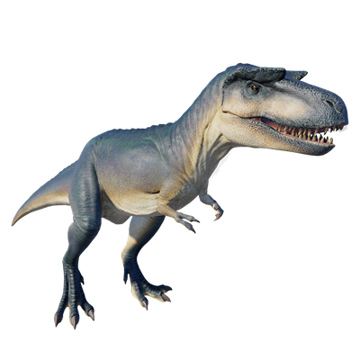

Useful Website
A relative of the infamous Tyrannosaurus rex, Albertosaurus is a carnivorous theropod from the Late Cretaceous period. Believed to have been the apex predator of its time, Albertosaurus’ rows of razor-sharp teeth make light work of the smaller, herbivorous dinosaurs it preys on, while its sheer size – approximately 9.5m long and weighing around 4 tonnes – ensure other predators steer clear.
